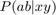
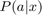
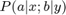

is then the defining representation
is then the defining representationWe describe the output/input/party relabelings in the CHSH scenario, and decompose their action on probability distributions .
Before using RepLAB commands, we must first initialize the library:
replab_init
Outputs are binary, so the relabelling of outputs is the symmetric group of domain size 2. The representation of this relabelling on the probabilities is then the defining representation
outputGroup = replab.S(2); outputRep = outputGroup.definingRep;
In the CHSH scenario, each party has two binary measurements. Therefore, a copy of S(2) acts on the outputs of the first measurement, and a second copy of S(2) acting on the outputs of the second measurement, while another copy of S(2) permutes the choice of measurement (input).
This is described by the wreath product of S(2) by S(2).
ioGroup = replab.S(2).wreathProduct(outputGroup);
The representation on the conditional probility  is the imprimitive representation, given that we use the defining representation for the inner group
ioRep = ioGroup.imprimitiveRep(outputRep);
The same story repeats for relabelings of parties: the scenario involves two homogeneous parties. We thus have two copies of the group relabeling inputs and/or outputs (one for Alice, one for Bob), and a copy of S2 that permutes the parties. This group desribing all possible relabellings in this scenario is thus given by:
scenarioGroup = outputGroup.wreathProduct(ioGroup);
The representation on the behavior is however a primitive representation, as  ressembles a tensor. Inside each party, we use the imprimitive representation constructed before.
probRep = scenarioGroup.primitiveRep(ioRep);
We can now compute the decomposition of this representation on :
dec = probRep.decomposition
dec =
Subrepresentation
dimension: 16
field: 'R'
group: replab.wreathproduct.OfNiceFiniteGroup
irrepInfo: []
isUnitary: true
niceBasis: replab.NiceBasis
parent: Orthogonal real representation of dimension 16
U(1,:): [1, 1, 1, 1, 1, 1, 1, 1, 1, 1, 1, 1, 1, 1, 1, 1]/4
U(2,:): [1, 1, -1, -1, 1, 1, -1, -1, -1, -1, 1, 1, -1, -1, 1, 1]/4
U(3,:): [1, 1, 1, 1, 1, 1, 1, 1, -1, -1, -1, -1, -1, -1, -1, -1]/4
U(4,:): [1, 1, -1, -1, 1, 1, -1, -1, 1, 1, -1, -1, 1, 1, -1, -1]/4
U(5,:): [1, -1, -1, 1, 1, -1, -1, 1, -1, 1, 1, -1, -1, 1, 1, -1]/4
U(6,:): [1, 1, -1, -1, -1, -1, 1, 1, -1, -1, 1, 1, 1, 1, -1, -1]/4
U(7,:): [1, -1, 1, -1, 1, -1, 1, -1, -1, 1, -1, 1, -1, 1, -1, 1]/4
U(8,:): [1, 1, -1, -1, -1, -1, 1, 1, 1, 1, -1, -1, -1, -1, 1, 1]/4
U(9,:): [1, -1, 1, -1, 1, -1, 1, -1, 1, -1, 1, -1, 1, -1, 1, -1]/4
U(10,:): [1, 1, 1, 1, -1, -1, -1, -1, 1, 1, 1, 1, -1, -1, -1, -1]/4
U(11,:): [1, -1, -1, 1, 1, -1, -1, 1, 1, -1, -1, 1, 1, -1, -1, 1]/4
U(12,:): [1, 1, 1, 1, -1, -1, -1, -1, -1, -1, -1, -1, 1, 1, 1, 1]/4
U(13,:): [1, -1, 1, -1, -1, 1, -1, 1, -1, 1, -1, 1, 1, -1, 1, -1]/4
U(14,:): [1, -1, -1, 1, -1, 1, 1, -1, 1, -1, -1, 1, -1, 1, 1, -1]/4
U(15,:): [1, -1, -1, 1, -1, 1, 1, -1, -1, 1, 1, -1, 1, -1, -1, 1]/4
U(16,:): [1, -1, 1, -1, -1, 1, -1, 1, 1, -1, 1, -1, -1, 1, -1, 1]/4
...
There are 6 irreducible componenta
dec.nComponents
ans =
6
These components correspond to the following physical elements (see arXiv:1610.01833 for more details):